쭉쭉냥 리소스 목록
리소스 목록
| 순번 | 분류 | 리소스명 | 파일 이름 | 경로 | 사용 화면 | 크기(px) | 썸네일 | 제작 방식 | 라이선스 | 비고 |
|---|---|---|---|---|---|---|---|---|---|---|
| ■ 앱 아이콘 | ||||||||||
| 1 | 앱 아이콘 | 앱 아이콘 | AppIcon.png | Assets/StringPuzzle/Art/AppIcon | 홈 화면 | 1024×1024 | AI 생성 | 자체 제작 | 기본 | |
| 2 | 앱 아이콘 | 앱 아이콘 앞면 | AppIconForeground.png | Assets/StringPuzzle/Art/AppIcon | 홈 화면 | 1024×1024 | 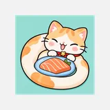 | AI 생성 | 자체 제작 | 72% 축소 |
| 3 | 앱 아이콘 | 앱 아이콘 배경 | AppIconBackground.png | Assets/StringPuzzle/Art/AppIcon | 홈 화면 | 1024×1024 | 직접 제작 | 자체 제작 | 민트 단색 | |
| ■ 캐릭터 | ||||||||||
| 4 | 캐릭터 | 고양이 머리 평소 | head_idle.png | Assets/StringPuzzle/Art/Cat | 퍼즐 화면 | 381×381 | AI 생성 | 자체 제작 | 귀 없음 | |
| 5 | 캐릭터 | 고양이 머리 평소·귀 | head_idle_ears.png | Assets/StringPuzzle/Art/Cat | 퍼즐 화면 | 381×381 | AI 생성 | 자체 제작 | 귀 있음 | |
| 6 | 캐릭터 | 고양이 머리 기쁨 | head_happy.png | Assets/StringPuzzle/Art/Cat | 클리어 | 381×381 | AI 생성 | 자체 제작 | 귀 없음 | |
| 7 | 캐릭터 | 고양이 머리 기쁨·귀 | head_happy_ears.png | Assets/StringPuzzle/Art/Cat | 클리어 | 381×381 | AI 생성 | 자체 제작 | 귀 있음 | |
| 8 | 캐릭터 | 고양이 머리 놀람 | head_surprised.png | Assets/StringPuzzle/Art/Cat | 오답 | 381×381 | AI 생성 | 자체 제작 | 귀 없음 | |
| 9 | 캐릭터 | 고양이 머리 놀람·귀 | head_surprised_ears.png | Assets/StringPuzzle/Art/Cat | 오답 | 381×381 | AI 생성 | 자체 제작 | 귀 있음 | |
| 10 | 캐릭터 | 고양이 머리 깜빡임 | head_blink.png | Assets/StringPuzzle/Art/Cat | 퍼즐 화면 | 381×381 | AI 생성 | 자체 제작 | 귀 없음 | |
| 11 | 캐릭터 | 고양이 머리 깜빡임·귀 | head_blink_ears.png | Assets/StringPuzzle/Art/Cat | 퍼즐 화면 | 381×381 | AI 생성 | 자체 제작 | 귀 있음 | |
| 12 | 캐릭터 | 고양이 몸통 | body_tile.png | Assets/StringPuzzle/Art/Cat | 퍼즐 화면 | 328×198 | 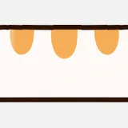 | AI 생성 | 자체 제작 | 반복 무늬 |
| 13 | 캐릭터 | 고양이 꼬리 | tail.png | Assets/StringPuzzle/Art/Cat | 퍼즐 화면 | 291×255 | 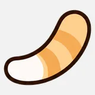 | AI 생성 | 자체 제작 | |
| 14 | 캐릭터 | 고양이 앞발 | paw.png | Assets/StringPuzzle/Art/Cat | 퍼즐 화면 | 186×219 | 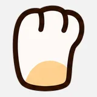 | AI 생성 | 자체 제작 | |
| 15 | 캐릭터 | 고양이 스킨 설정 | CatSkin.asset | Assets/StringPuzzle/Art/Cat | 퍼즐 화면 | - | 직접 제작 | 자체 제작 | 그림 묶음 | |
| ■ 레벨 요소 | ||||||||||
| 16 | 레벨 요소 | 연어 접시 | salmon_dish.png | Assets/StringPuzzle/Art/Pegs | 퍼즐 화면, 상단 바 | 220×121 | 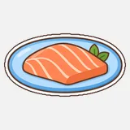 | AI 생성 | 자체 제작 | 화풍 기준 |
| ■ UI | ||||||||||
| 17 | UI | 말풍선 꼬리 | BubbleTail.png | Assets/StringPuzzle/Art/UI | 공통 UI | 64×64 | 직접 제작 | 자체 제작 | 코드 생성 | |
| 18 | UI | 알약 바탕 | Pill.png | Assets/StringPuzzle/Art/UI | 공통 UI | 128×128 | 직접 제작 | 자체 제작 | 코드 생성 | |
| 19 | UI | 발바닥 | Paw.png | Assets/StringPuzzle/Art/UI | 공통 UI | 96×96 | 직접 제작 | 자체 제작 | 코드 생성 | |
| 20 | UI | 발바닥 테두리 | PawOutline.png | Assets/StringPuzzle/Art/UI | 공통 UI | 96×96 | 직접 제작 | 자체 제작 | 코드 생성 | |
| 21 | UI | 아이콘 닫기 | IconClose.png | Assets/StringPuzzle/Art/UI | 메뉴 버튼 | 128×128 | 무료 에셋 | Apache 2.0 | Material Icons | |
| 22 | UI | 아이콘 레벨 선택 | IconLevels.png | Assets/StringPuzzle/Art/UI | 메뉴 버튼 | 128×128 | 무료 에셋 | Apache 2.0 | Material Icons | |
| 23 | UI | 아이콘 다음 | IconNext.png | Assets/StringPuzzle/Art/UI | 메뉴 버튼 | 128×128 | 무료 에셋 | Apache 2.0 | Material Icons | |
| 24 | UI | 아이콘 이전 | IconPrevious.png | Assets/StringPuzzle/Art/UI | 메뉴 버튼 | 128×128 | 무료 에셋 | Apache 2.0 | Material Icons | |
| 25 | UI | 아이콘 다시 하기 | IconReset.png | Assets/StringPuzzle/Art/UI | 메뉴 버튼 | 128×128 | 무료 에셋 | Apache 2.0 | Material Icons | |
| 26 | UI | 아이콘 설정 | IconSettings.png | Assets/StringPuzzle/Art/UI | 메뉴 버튼 | 128×128 | 무료 에셋 | Apache 2.0 | Material Icons | |
| 27 | UI | 아이콘 소리 끄기 | IconSoundOff.png | Assets/StringPuzzle/Art/UI | 메뉴 버튼 | 128×128 | 무료 에셋 | Apache 2.0 | Material Icons | |
| 28 | UI | 아이콘 소리 켜기 | IconSoundOn.png | Assets/StringPuzzle/Art/UI | 메뉴 버튼 | 128×128 | 무료 에셋 | Apache 2.0 | Material Icons | |
| 29 | UI | 아이콘 뒤로 | IconUndo.png | Assets/StringPuzzle/Art/UI | 메뉴 버튼 | 128×128 | 무료 에셋 | Apache 2.0 | Material Icons | |
| 30 | UI | 글자 그림자 | HudTextShadow.mat | Assets/StringPuzzle/Art/UI | 상단 바 | - | 직접 제작 | 자체 제작 | ||
| ■ 일일 도전 | ||||||||||
| 31 | 일일 도전 | 요일 아이콘 | theme_sheet.png | Assets/StringPuzzle/Resources/Daily | 일일 도전 | 3584×512 | 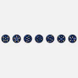 | AI 생성 | 자체 제작 | |
| 32 | 일일 도전 | 발도장 | paw_stamp.png | Assets/StringPuzzle/Resources/Daily | 일일 도전 | 256×256 | AI 생성 | 자체 제작 | ||
| 33 | 일일 도전 | 오늘 별 | today_star.png | Assets/StringPuzzle/Resources/Daily | 일일 도전 | 256×256 | AI 생성 | 자체 제작 | ||
| 34 | 일일 도전 | 밤하늘 배경 | night_sky.png | Assets/StringPuzzle/Resources/Daily | 일일 도전 | 1080×1920 | 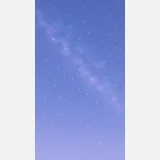 | AI 생성 | 자체 제작 | |
| 35 | 일일 도전 | 메달 모음 | medal_sheet.png | Assets/StringPuzzle/Resources/Daily | 메달 도감, 타이틀 | 3072×512 | 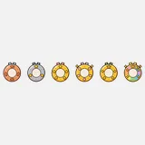 | AI 생성 | 자체 제작 | |
| 36 | 일일 도전 | 메달 모음·숫자 | medal_sheet_numbered.png | Assets/StringPuzzle/Resources/Daily | 메달 도감 | 3072×512 | 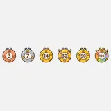 | AI 생성 | 자체 제작 | |
| 37 | 일일 도전 | 메달 도감 틀 | medal_book_frame.png | Assets/StringPuzzle/Resources/Daily | 메달 도감 | 512×512 | 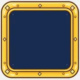 | AI 생성 | 자체 제작 | |
| 38 | 일일 도전 | 메달 도감 띠 | medal_book_banner.png | Assets/StringPuzzle/Resources/Daily | 메달 도감 | 1024×256 | 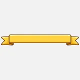 | AI 생성 | 자체 제작 | |
| 39 | 일일 도전 | 메달 방석 | medal_cushion.png | Assets/StringPuzzle/Resources/Daily | 메달 도감 | 512×256 | 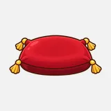 | AI 생성 | 자체 제작 | |
| ■ 사운드 | ||||||||||
| 40 | 사운드 | 버튼 효과음 | kenney_drop_002.ogg | Assets/StringPuzzle/Audio | 버튼 | - | 무료 에셋 | CC0 | Kenney | |
| 41 | 사운드 | 오답 효과음 | kenney_error_008.ogg | Assets/StringPuzzle/Audio | 오답 | - | 무료 에셋 | CC0 | Kenney | |
| ■ 폰트 | ||||||||||
| 42 | 폰트 | 기본 글꼴 주아 | Jua-Regular.ttf | Assets/StringPuzzle/Fonts | 모든 화면 | - | 무료 폰트 | OFL | Jua | |
| 43 | 폰트 | 보조 글꼴 개구 | Gaegu-Bold.ttf | Assets/StringPuzzle/Fonts | 클리어, 말풍선, 타이틀 | - | 무료 폰트 | OFL | Gaegu | |
| ■ 셰이더 | ||||||||||
| 44 | 셰이더 | 화면 전환 블러 | MotionBlurUI.shader | Assets/StringPuzzle/Shaders | 화면 전환 | - | 직접 제작 | 자체 제작 | ||
레벨 그림
| 순번 | 레벨 그림 이름 | 파일 이름 | 크기(px) | 썸네일 | 제작 방식 |
|---|---|---|---|---|---|
| 1 | 도토리 | acorn.png | 1024×1024 | 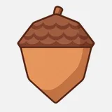 | AI 생성 |
| 2 | 비행기 | airplane.png | 1024×1024 | AI 생성 | |
| 3 | 사과 | apple.png | 1024×1024 | 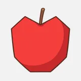 | AI 생성 |
| 4 | 화살표 | arrow.png | 1024×1024 | 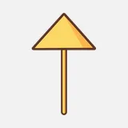 | AI 생성 |
| 5 | 가방 | bag.png | 1024×1024 | 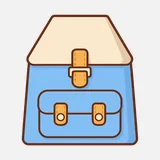 | AI 생성 |
| 6 | 풍선 | balloon.png | 1024×1024 | 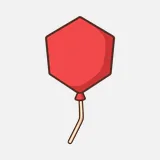 | AI 생성 |
| 7 | 바나나 | banana.png | 1024×1024 | 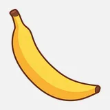 | AI 생성 |
| 8 | 곰 얼굴 | bear-face.png | 1024×1024 | 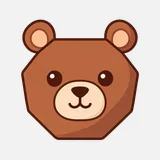 | AI 생성 |
| 9 | 풍뎅이 | beetle.png | 1024×1024 | 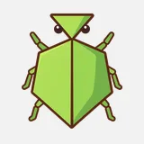 | AI 생성 |
| 10 | 종 | bell.png | 1024×1024 | AI 생성 | |
| 11 | 자전거 | bicycle.png | 1024×1024 | 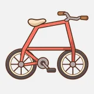 | AI 생성 |
| 12 | 큰 별 | big-star.png | 1024×1024 | 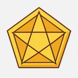 | AI 생성 |
| 13 | 책 | book.png | 1024×1024 | AI 생성 | |
| 14 | 부메랑 | boomerang.png | 1024×1024 | AI 생성 | |
| 15 | 물병 | bottle.png | 1024×1024 | 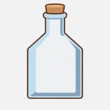 | AI 생성 |
| 16 | 리본 매듭 | bow.png | 1024×1024 | 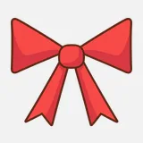 | AI 생성 |
| 17 | 볼링핀 | bowling-pin.png | 1024×1024 | 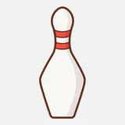 | AI 생성 |
| 18 | 식빵 | bread-slice.png | 1024×1024 | 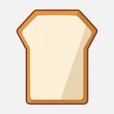 | AI 생성 |
| 19 | 벙거지 모자 | bucket-hat.png | 1024×1024 | 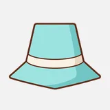 | AI 생성 |
| 20 | 양동이 | bucket.png | 1024×1024 | 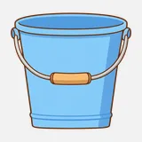 | AI 생성 |
| 21 | 토끼 | bunny.png | 1024×1024 | 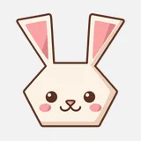 | AI 생성 |
| 22 | 햄버거 | burger.png | 1024×1024 | 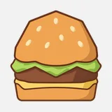 | AI 생성 |
| 23 | 나비 | butterfly.png | 1024×1024 | 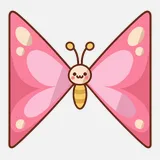 | AI 생성 |
| 24 | 선인장 | cactus.png | 1024×1024 | 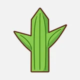 | AI 생성 |
| 25 | 케이크 조각 | cake-slice.png | 1024×1024 | 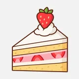 | AI 생성 |
| 26 | 케이크 | cake.png | 1024×1024 | AI 생성 | |
| 27 | 모닥불 | campfire.png | 1024×1024 | AI 생성 | |
| 28 | 양초 | candle.png | 1024×1024 | 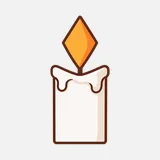 | AI 생성 |
| 29 | 지팡이 사탕 | candy-cane.png | 1024×1024 | AI 생성 | |
| 30 | 사탕 | candy.png | 1024×1024 | 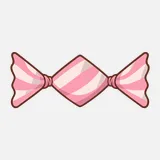 | AI 생성 |
| 31 | 자동차 | car.png | 1024×1024 | 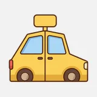 | AI 생성 |
| 32 | 당근 | carrot.png | 1024×1024 | 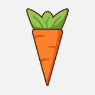 | AI 생성 |
| 33 | 성 | castle.png | 1024×1024 | 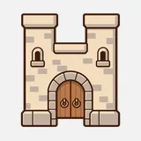 | AI 생성 |
| 34 | 고양이 얼굴 | cat-face.png | 1024×1024 | 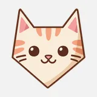 | AI 생성 |
| 35 | 체리 | cherries.png | 1024×1024 | 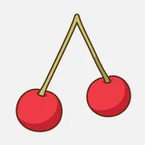 | AI 생성 |
| 36 | 체스 말 | chess-pawn.png | 1024×1024 | 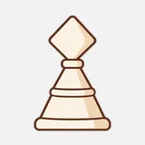 | AI 생성 |
| 37 | 병아리 | chick.png | 1024×1024 | 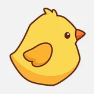 | AI 생성 |
| 38 | 고추 | chili-pepper.png | 1024×1024 | 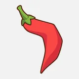 | AI 생성 |
| 39 | 트리 | christmas-tree.png | 1024×1024 | 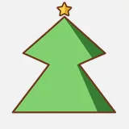 | AI 생성 |
| 40 | 시계 | clock.png | 1024×1024 | 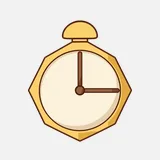 | AI 생성 |
| 41 | 구름 | cloud.png | 1024×1024 | 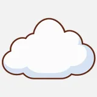 | AI 생성 |
| 42 | 클로버 | clover.png | 1024×1024 | 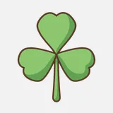 | AI 생성 |
| 43 | 초승달 | crescent.png | 1024×1024 | 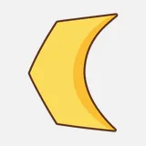 | AI 생성 |
| 44 | 십자 | cross.png | 1024×1024 | 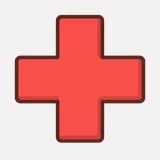 | AI 생성 |
| 45 | 왕관 | crown.png | 1024×1024 | 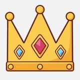 | AI 생성 |
| 46 | 컵케이크 | cupcake.png | 1024×1024 | AI 생성 | |
| 47 | 스탠드 | desk-lamp.png | 1024×1024 | AI 생성 | |
| 48 | 마름모 | diamond.png | 1024×1024 | AI 생성 | |
| 49 | 돌고래 | dolphin.png | 1024×1024 | AI 생성 | |
| 50 | 북 | drum.png | 1024×1024 | AI 생성 | |
| 51 | 오리 | duck.png | 1024×1024 | AI 생성 | |
| 52 | 아령 | dumbbell.png | 1024×1024 | AI 생성 | |
| 53 | 쓰레받기 | dustpan.png | 1024×1024 | AI 생성 | |
| 54 | 귀걸이 | earring.png | 1024×1024 | AI 생성 | |
| 55 | 가지 | eggplant.png | 1024×1024 | AI 생성 | |
| 56 | 편지 봉투 집 | envelope-house.png | 1024×1024 | AI 생성 | |
| 57 | 깃털 | feather.png | 1024×1024 | AI 생성 | |
| 58 | 붕어빵 | fish-bun.png | 1024×1024 | AI 생성 | |
| 59 | 물고기 | fish.png | 1024×1024 | AI 생성 | |
| 60 | 깃발 | flag.png | 1024×1024 | AI 생성 | |
| 61 | 손전등 | flashlight.png | 1024×1024 | AI 생성 | |
| 62 | 꽃 | flower.png | 1024×1024 | AI 생성 | |
| 63 | 화분 | flowerpot.png | 1024×1024 | AI 생성 | |
| 64 | 부채 | folding-fan.png | 1024×1024 | AI 생성 | |
| 65 | 개구리 | frog.png | 1024×1024 | AI 생성 | |
| 66 | 보석 | gem.png | 1024×1024 | AI 생성 | |
| 67 | 선물 상자 | gift-box.png | 1024×1024 | AI 생성 | |
| 68 | 유리잔 | glass.png | 1024×1024 | AI 생성 | |
| 69 | 안경 | glasses.png | 1024×1024 | AI 생성 | |
| 70 | 포도 | grapes.png | 1024×1024 | AI 생성 | |
| 71 | 기타 | guitar.png | 1024×1024 | AI 생성 | |
| 72 | 망치 | hammer.png | 1024×1024 | AI 생성 | |
| 73 | 하트 | heart.png | 1024×1024 | AI 생성 | |
| 74 | 벌집 | honeycomb.png | 1024×1024 | AI 생성 | |
| 75 | 열기구 | hot-air-balloon.png | 1024×1024 | AI 생성 | |
| 76 | 모래시계 | hourglass.png | 1024×1024 | AI 생성 | |
| 77 | 집 | house.png | 1024×1024 | AI 생성 | |
| 78 | 아이스크림 | ice-cream.png | 1024×1024 | AI 생성 | |
| 79 | 이글루 | igloo.png | 1024×1024 | AI 생성 | |
| 80 | 무한대 | infinity.png | 1024×1024 | AI 생성 | |
| 81 | 다리미 | iron.png | 1024×1024 | AI 생성 | |
| 82 | 해파리 | jellyfish.png | 1024×1024 | AI 생성 | |
| 83 | 주스 팩 | juice-box.png | 1024×1024 | AI 생성 | |
| 84 | 케첩 병 | ketchup-bottle.png | 1024×1024 | AI 생성 | |
| 85 | 열쇠 | key.png | 1024×1024 | AI 생성 | |
| 86 | 열쇠구멍 | keyhole.png | 1024×1024 | AI 생성 | |
| 87 | 연 | kite.png | 1024×1024 | AI 생성 | |
| 88 | 국자 | ladle.png | 1024×1024 | AI 생성 | |
| 89 | 노트북 | laptop.png | 1024×1024 | AI 생성 | |
| 90 | 나뭇잎 | leaf.png | 1024×1024 | AI 생성 | |
| 91 | 레몬 조각 | lemon-slice.png | 1024×1024 | AI 생성 | |
| 92 | 레몬 | lemon.png | 1024×1024 | AI 생성 | |
| 93 | 편지 | letter.png | 1024×1024 | AI 생성 | |
| 94 | 전구 | light-bulb.png | 1024×1024 | AI 생성 | |
| 95 | 등대 | lighthouse.png | 1024×1024 | AI 생성 | |
| 96 | 번개 | lightning.png | 1024×1024 | AI 생성 | |
| 97 | 막대사탕 | lollipop.png | 1024×1024 | AI 생성 | |
| 98 | 연꽃 | lotus.png | 1024×1024 | AI 생성 | |
| 99 | 도시락 | lunch-box.png | 1024×1024 | AI 생성 | |
| 100 | 돋보기 | magnifier.png | 1024×1024 | AI 생성 | |
| 101 | 우체통 | mailbox.png | 1024×1024 | AI 생성 | |
| 102 | 메달 | medal.png | 1024×1024 | AI 생성 | |
| 103 | 마이크 | microphone.png | 1024×1024 | AI 생성 | |
| 104 | 전자레인지 | microwave.png | 1024×1024 | AI 생성 | |
| 105 | 우유팩 | milk-carton.png | 1024×1024 | AI 생성 | |
| 106 | 장갑 | mitten.png | 1024×1024 | AI 생성 | |
| 107 | 산 | mountains.png | 1024×1024 | AI 생성 | |
| 108 | 머그컵 | mug.png | 1024×1024 | AI 생성 | |
| 109 | 버섯 | mushroom.png | 1024×1024 | AI 생성 | |
| 110 | 음표 | music-note.png | 1024×1024 | AI 생성 | |
| 111 | 콧수염 | mustache.png | 1024×1024 | AI 생성 | |
| 112 | 목걸이 | necklace.png | 1024×1024 | AI 생성 | |
| 113 | 넥타이 | necktie.png | 1024×1024 | AI 생성 | |
| 114 | 숫자 2 | number-2.png | 1024×1024 | AI 생성 | |
| 115 | 숫자 3 | number-3.png | 1024×1024 | AI 생성 | |
| 116 | 숫자 5 | number-5.png | 1024×1024 | AI 생성 | |
| 117 | 숫자 8 | number-8.png | 1024×1024 | AI 생성 | |
| 118 | 부엉이 | owl.png | 1024×1024 | AI 생성 | |
| 119 | 자물쇠 | padlock.png | 1024×1024 | AI 생성 | |
| 120 | 야자수 | palm-tree.png | 1024×1024 | AI 생성 | |
| 121 | 종이배 | paper-boat.png | 1024×1024 | AI 생성 | |
| 122 | 종이컵 | paper-cup.png | 1024×1024 | AI 생성 | |
| 123 | 종이비행기 | paper-plane.png | 1024×1024 | AI 생성 | |
| 124 | 고깔모자 | party-hat.png | 1024×1024 | AI 생성 | |
| 125 | 배 | pear.png | 1024×1024 | AI 생성 | |
| 126 | 연필 | pencil.png | 1024×1024 | AI 생성 | |
| 127 | 솔방울 | pine-cone.png | 1024×1024 | AI 생성 | |
| 128 | 바람개비 | pinwheel.png | 1024×1024 | AI 생성 | |
| 129 | 피자 | pizza.png | 1024×1024 | AI 생성 | |
| 130 | 아이스바 | popsicle.png | 1024×1024 | AI 생성 | |
| 131 | 냄비 | pot.png | 1024×1024 | AI 생성 | |
| 132 | 프레첼 | pretzel.png | 1024×1024 | AI 생성 | |
| 133 | 피라미드 | pyramid.png | 1024×1024 | AI 생성 | |
| 134 | 장화 | rain-boot.png | 1024×1024 | AI 생성 | |
| 135 | 리본 | ribbon.png | 1024×1024 | AI 생성 | |
| 136 | 삼각김밥 | rice-ball.png | 1024×1024 | AI 생성 | |
| 137 | 주걱 | rice-paddle.png | 1024×1024 | AI 생성 | |
| 138 | 반지 | ring.png | 1024×1024 | AI 생성 | |
| 139 | 로봇 얼굴 | robot-face.png | 1024×1024 | AI 생성 | |
| 140 | 로켓 | rocket.png | 1024×1024 | AI 생성 | |
| 141 | 오뚝이 | roly-poly.png | 1024×1024 | AI 생성 | |
| 142 | 돛단배 | sailboat.png | 1024×1024 | AI 생성 | |
| 143 | 산타 모자 | santa-hat.png | 1024×1024 | AI 생성 | |
| 144 | 갈매기 | seagull.png | 1024×1024 | AI 생성 | |
| 145 | 조개 | seashell.png | 1024×1024 | AI 생성 | |
| 146 | 시소 | seesaw.png | 1024×1024 | AI 생성 | |
| 147 | 칠각별 | seven-point-star.png | 1024×1024 | AI 생성 | |
| 148 | 방패 | shield.png | 1024×1024 | AI 생성 | |
| 149 | 삽 | shovel.png | 1024×1024 | AI 생성 | |
| 150 | 표지판 | signpost.png | 1024×1024 | AI 생성 | |
| 151 | 썰매 | sled.png | 1024×1024 | AI 생성 | |
| 152 | 달팽이 | snail.png | 1024×1024 | AI 생성 | |
| 153 | 뱀 | snake.png | 1024×1024 | AI 생성 | |
| 154 | 운동화 | sneaker.png | 1024×1024 | AI 생성 | |
| 155 | 눈사람 | snowman.png | 1024×1024 | AI 생성 | |
| 156 | 설산 | snowy-mountain.png | 1024×1024 | AI 생성 | |
| 157 | 양말 | sock.png | 1024×1024 | AI 생성 | |
| 158 | 말풍선 | speech-bubble.png | 1024×1024 | AI 생성 | |
| 159 | 팽이 | spinning-top.png | 1024×1024 | AI 생성 | |
| 160 | 숟가락 | spoon.png | 1024×1024 | AI 생성 | |
| 161 | 계단 | stairs.png | 1024×1024 | AI 생성 | |
| 162 | 별 | star.png | 1024×1024 | AI 생성 | |
| 163 | 먹구름 | storm-cloud.png | 1024×1024 | AI 생성 | |
| 164 | 딸기 | strawberry.png | 1024×1024 | AI 생성 | |
| 165 | 가로등 | street-lamp.png | 1024×1024 | AI 생성 | |
| 166 | 잠수함 | submarine.png | 1024×1024 | AI 생성 | |
| 167 | 해바라기 | sunflower.png | 1024×1024 | AI 생성 | |
| 168 | 초밥 | sushi.png | 1024×1024 | AI 생성 | |
| 169 | 호랑나비 | swallowtail.png | 1024×1024 | AI 생성 | |
| 170 | 티셔츠 | t-shirt.png | 1024×1024 | AI 생성 | |
| 171 | 탁상 거울 | table-mirror.png | 1024×1024 | AI 생성 | |
| 172 | 올챙이 | tadpole.png | 1024×1024 | AI 생성 | |
| 173 | 찻잔 | teacup.png | 1024×1024 | AI 생성 | |
| 174 | 텐트 | tent.png | 1024×1024 | AI 생성 | |
| 175 | 티켓 | ticket.png | 1024×1024 | AI 생성 | |
| 176 | 모자 | top-hat.png | 1024×1024 | AI 생성 | |
| 177 | 보물상자 | treasure-chest.png | 1024×1024 | AI 생성 | |
| 178 | 나무 | tree.png | 1024×1024 | AI 생성 | |
| 179 | 삼각형 | triangle.png | 1024×1024 | AI 생성 | |
| 180 | 트로피 | trophy.png | 1024×1024 | AI 생성 | |
| 181 | 트럭 | truck.png | 1024×1024 | AI 생성 | |
| 182 | 나팔 | trumpet.png | 1024×1024 | AI 생성 | |
| 183 | 튤립 | tulip.png | 1024×1024 | AI 생성 | |
| 184 | 거북이 | turtle.png | 1024×1024 | AI 생성 | |
| 185 | 텔레비전 | tv.png | 1024×1024 | AI 생성 | |
| 186 | 쌍둥이 집 | twin-houses.png | 1024×1024 | AI 생성 | |
| 187 | 책 두 권 | two-books.png | 1024×1024 | AI 생성 | |
| 188 | 비행접시 | ufo.png | 1024×1024 | AI 생성 | |
| 189 | 우산 | umbrella.png | 1024×1024 | AI 생성 | |
| 190 | 꽃병 | vase.png | 1024×1024 | AI 생성 | |
| 191 | 물방울 | water-drop.png | 1024×1024 | AI 생성 | |
| 192 | 물뿌리개 | watering-can.png | 1024×1024 | AI 생성 | |
| 193 | 수박 조각 | watermelon-slice.png | 1024×1024 | AI 생성 | |
| 194 | 고래 꼬리 | whale-tail.png | 1024×1024 | AI 생성 | |
| 195 | 고래 | whale.png | 1024×1024 | AI 생성 | |
| 196 | 풍차 | windmill.png | 1024×1024 | AI 생성 | |
| 197 | 손목시계 | wristwatch.png | 1024×1024 | AI 생성 |
라이선스
| 구분 | 대상 | 라이선스 | 출처 | 상업 이용 | 비고 |
|---|---|---|---|---|---|
| 효과음 | Kenney 효과음 2개 | CC0 | Kenney | 가능 | 표기 불필요 |
| 폰트 | 주아 | OFL 1.1 | Jua | 가능 | |
| 폰트 | 개구 | OFL 1.1 | Gaegu | 가능 | |
| 아이콘 | 버튼 아이콘 9개 | Apache 2.0 | Google Material Icons | 가능 | |
| AI 그림 | 고양이, 접시, 일일 도전, 레벨 그림, 앱 아이콘 | 자체 제작 | GPT 이미지 생성 | 확인 필요 | 약관 확인 |
| 코드 그림 | 공통 UI, 앱 아이콘 배경, 셰이더 | 자체 제작 | 직접 제작 | 가능 |